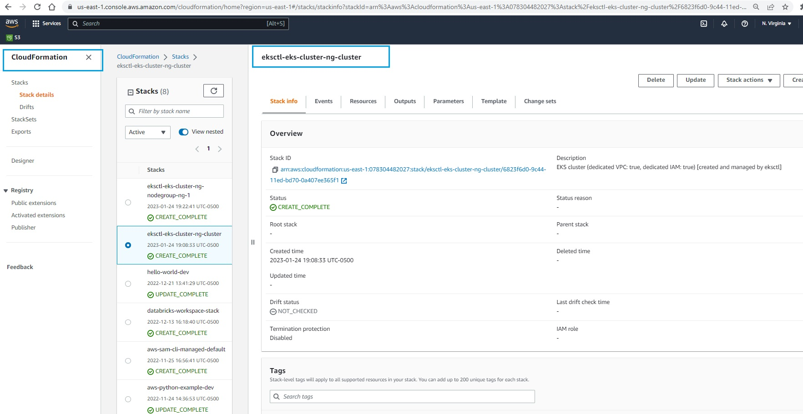
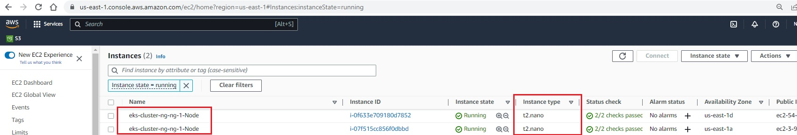
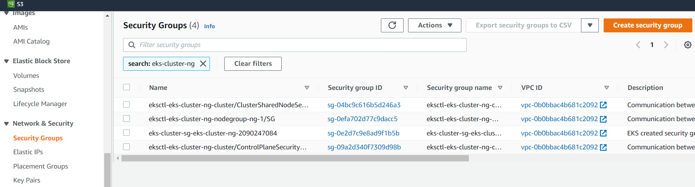

Create simple Cluster
In this section, we will create a simple cluster using eksctl
Create Yaml file
Create folder cluster-ng. The first step is to create a simple yaml file in this folder. Let's call it eks-cluster.yaml. Copy the following contents to it:
apiVersion: eksctl.io/v1alpha5
kind: ClusterConfig
metadata:
name: eks-cluster-ng
region: us-east-1
nodeGroups:
- name: ng-1
instanceType: t2.nano
desiredCapacity: 2
ssh: # use existing EC2 key
publicKeyName: eks-course
This tells EKS to:
- Create a cluster
eks-cluster-ngin region us-east-1 - Call the name of the nodegroup : ng-1
- Set the instance type as :t2.micro
- Set the desired capcity of instances as 2
- Set ssh key : eks-course
Create cluster
Now we will create the cluster by specfying the file to use with flag f with command : eksctl create cluster
eksctl create cluster -f eks-cluster.yaml
This will take 10-15 minutes. Now log into AWS console and navigate to the Cloud Formation service. You will see that eksctl creates a cloud formation stack. Check the resources tab to glace through various resources being created.

Check cluster
Now let's check the EC2 console. You will see 2 instances :

You can also see VPCs & Security groups created by cloud formation service : 
Let's use the eksctl get nodegroup command to get the details of the nodegroup we just created :
eksctl get nodegroup --cluster eks-cluster-ng
S C:\Users\aniru\workspace\github\aws-eks> eksctl get nodegroup --cluster eks-cluster-ng
CLUSTER NODEGROUP STATUS CREATED MIN SIZE MAX SIZE DESIRED CAPACITY INSTANCE TYPE IMAGE ID ASG NAME TYPE
eks-cluster-ng ng-1 CREATE_COMPLETE 2023-01-25T00:22:41Z 2 2 2 t2.nano ami-03a30cc1dda93f173 eksctl-eks-cluster-ng-nodegroup-ng-1-NodeGroup-6387ICJKD3BS unmanaged
Let's use the kubectl command to get the nodes :
kubectl get nodes
PS C:\Users\aniru\workspace\github\aws-eks> kubectl get nodes
Kubeconfig user entry is using deprecated API version client.authentication.k8s.io/v1alpha1. Run 'aws eks update-kubeconfig' to update.
NAME STATUS ROLES AGE VERSION
ip-192-168-21-105.ec2.internal Ready <none> 71m v1.22.15-eks-fb459a0
ip-192-168-54-187.ec2.internal Ready <none> 71m v1.22.15-eks-fb459a0